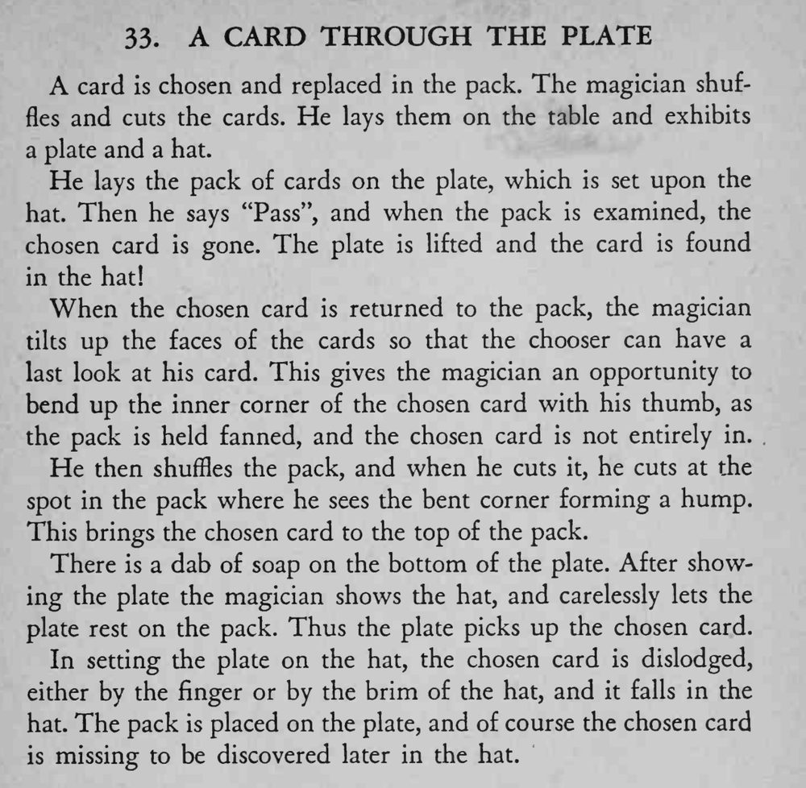

牌堆放在盘子上、盘子放在帽子上，魔术师说一声“过去”，选牌就从牌堆消失，出现在帽子里。
折角别太用力，观众最后看牌时也不能察觉。

A card is chosen and replaced in the pack. The magician shuffles and cuts the cards. He lays them on the table and exhibits a plate and a hat. He lays the pack of cards on the plate, which is set upon the hat. Then he says "Pass", and when the pack is examined, the chosen card is gone. The plate is lifted and the card is found in the hat! When the chosen card is returned to the pack, the magician tilts up the faces of the cards so that the chooser can have a last look at his card. This gives the magician an opportunity to bend up the inner corner of the chosen card with his thumb, as the pack is held fanned, and the chosen card is not entirely in. He then shuffles the pack, and when he cuts it, he cuts at the spot in the pack where he sees the bent corner forming a hump. This brings the chosen card to the top of the pack. There is a dab of soap on the bottom of the plate. After showing the plate the magician shows the hat, and carelessly lets the plate rest on the pack. Thus the plate picks up the chosen card. In setting the plate on the hat, the chosen card is dislodged, either by the finger or by the brim of the hat, and it falls in the hat. The pack is placed on the plate, and of course the chosen card is missing to be discovered later in the hat.